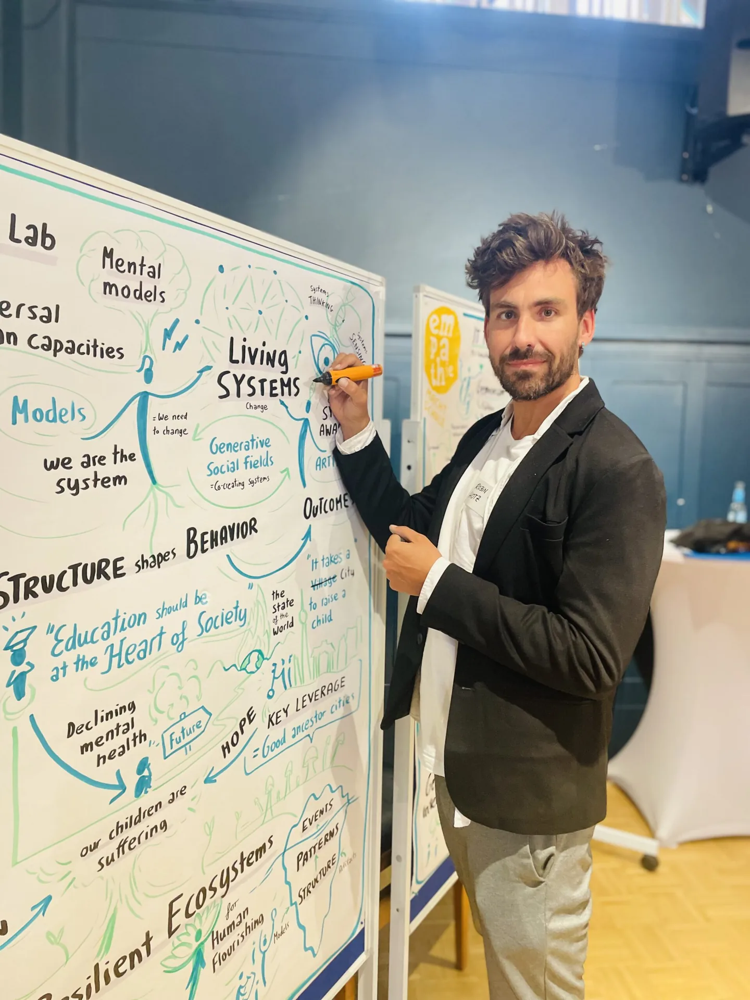
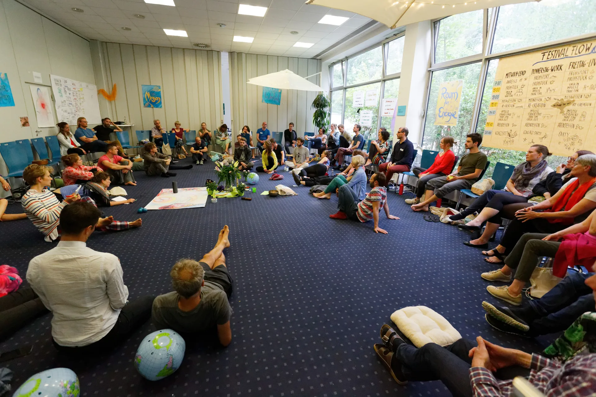

Unklare VerantwortungUnclear responsibility
Aufgaben bleiben liegen, Entscheidungen wandern nach oben und Zuständigkeiten überschneiden sich.Work falls between roles, decisions move upwards and responsibilities overlap.
The Loop Approach® hilft Teams, Klarheit zu schaffen, Verantwortung sinnvoll zu verteilen und ihre Zusammenarbeit von innen heraus weiterzuentwickeln, ohne starres Organisationsmodell von der Stange. The Loop Approach® helps teams create clarity, distribute responsibility and evolve how they work from within, without imposing a rigid off-the-shelf operating model.
The Loop Approach® wurde von TheDive entwickelt. Robin Hotz ist seit 2024 zertifizierter Loop Fellow. The Loop Approach® was developed by TheDive. Robin Hotz has been a certified Loop Fellow since 2024.

Teams verlieren nicht deshalb Wirkung, weil ihnen Kompetenz fehlt. Oft fehlen gemeinsame Klarheit und verlässliche Spielregeln für Zusammenarbeit.Teams rarely lose impact because they lack talent. More often, they lack shared clarity and reliable ways of working together.
Aufgaben bleiben liegen, Entscheidungen wandern nach oben und Zuständigkeiten überschneiden sich.Work falls between roles, decisions move upwards and responsibilities overlap.
Viel Austausch erzeugt noch keine Orientierung. Besprechungen kosten Energie, ohne klare Ergebnisse zu schaffen.More discussion does not automatically create direction. Meetings consume energy without producing clear outcomes.
Neue Modelle werden eingeführt, passen aber nicht zur Realität des Teams und verschwinden wieder aus dem Alltag.New models are introduced but fail to match the team’s reality and soon disappear from everyday work.
The Loop Approach® ist ein strukturierter Prozessrahmen für Teamtransformation. Ein Team reflektiert seine reale Arbeitsweise, lernt Praktiken der Selbstorganisation kennen und entwickelt daraus ein eigenes Zusammenarbeitsmodell.The Loop Approach® is a structured framework for team transformation. A team examines how it really works, learns practices of self-organisation and develops its own model of collaboration.
Das Ziel ist keine fertige Blaupause. Das Team schafft Klarheit, testet neue Vereinbarungen im Alltag und lernt, seine Struktur selbst weiterzuentwickeln.The goal is not a finished blueprint. The team creates clarity, tests new agreements in everyday work and learns to evolve its own structure.


Der klassische Loop umfasst drei aufeinander aufbauende Module mit jeweils zwei Workshoptagen und Transferphasen im Arbeitsalltag.The classic Loop journey consists of three connected two-day modules with transfer phases in everyday work.
Purpose, Potenziale und Rollen werden sichtbar. Das Team schafft eine gemeinsame Grundlage und verteilt Verantwortung nachvollziehbar.Purpose, potential and roles become visible. The team creates a shared foundation and distributes responsibility clearly.
Aus Klarheit wird tägliche Wirksamkeit. Das Team verbessert Selbstorganisation, Abstimmung, Meetings und seine gemeinsame Arbeitsweise.Clarity becomes everyday effectiveness. The team improves self-organisation, coordination, meetings and collective working practices.
Das Team lernt, Regeln, Rollen und Strukturen selbst anzupassen und Spannungen durch Feedback und Konfliktklärung produktiv zu nutzen.The team learns to adapt rules, roles and structures and use tensions productively through feedback and conflict resolution.
Sie brauchen keine fertige Vorstellung von Selbstorganisation. Sie brauchen ein Team, das offen ist, die eigene Zusammenarbeit ehrlich anzuschauen und neue Praktiken im Alltag zu erproben.You do not need a finished vision of self-organisation. You need a team willing to examine its collaboration honestly and test new practices in everyday work.
Als zertifizierter Loop Fellow verbinde ich den klaren Rahmen von The Loop Approach® mit professioneller Facilitation und visueller Ergebnissicherung. Ich führe durch anspruchsvolle Gespräche, mache Muster sichtbar und helfe dem Team, konkrete Vereinbarungen zu treffen.As a certified Loop Fellow, I combine the clear framework of The Loop Approach® with professional facilitation and visual documentation. I guide demanding conversations, make patterns visible and help the team form concrete agreements.
Dabei gebe ich keine fertige Organisationsstruktur vor. Die Lösungen entstehen mit dem Team, werden zwischen den Modulen erprobt und so angepasst, dass sie im echten Arbeitsalltag tragen.I do not prescribe a finished organisational structure. Solutions are created with the team, tested between modules and adapted until they work in real everyday conditions.

Wir klären Anlass, Team, Spannungen und gewünschte Veränderung.We clarify the context, team, tensions and desired change.
Sie erhalten eine passende Prozessarchitektur, Termine und ein transparentes Angebot.You receive a suitable process architecture, schedule and transparent proposal.
Wir durchlaufen Klarheit, Ergebnisse und Evolution mit Transfer zwischen den Modulen.We move through Clarity, Results and Evolution with transfer between modules.
Das Team sichert Vereinbarungen und kann seine Zusammenarbeit selbst weiterentwickeln.The team anchors agreements and can continue evolving how it works.
The Loop Approach® steht in einem größeren Feld selbstorganisierter Zusammenarbeit. Diese Links führen zu den jeweiligen Originalquellen und vertiefenden Ressourcen.The Loop Approach® sits within a wider field of self-organising collaboration. These links lead to the original sources and further learning resources.
Offizielle Methodenseite zum Transformationsprozess und zu den sieben Qualitäten wirksamer Organisationen.Official method page covering the transformation process and seven qualities of effective organisations.
Offizielle Seite öffnenOpen official page HolacracyOneOffizielle Informationen zu Rollen, verteilten Befugnissen und dem Holacracy® Governance-System.Official information about roles, distributed authority and the Holacracy® governance system.
Offizielle Seite öffnenOpen official page Sociocracy for AllEine fundierte Einführung in Konsent, Kreise, Rollen und verteilte Entscheidungsstrukturen.An authoritative introduction to consent, circles, roles and distributed decision structures.
Ressourcen öffnenOpen resourcesThe Loop Approach® ist eine eingetragene Marke von TheDive. Holacracy® ist eine eingetragene Marke von HolacracyOne, LLC. Die Verlinkung dient der fachlichen Einordnung und stellt kein eigenes Holacracy® Leistungsangebot dar. Soziokratie ist eine allgemeine Bezeichnung und trägt daher kein Markenzeichen.The Loop Approach® is a registered trademark of TheDive. Holacracy® is a registered trademark of HolacracyOne, LLC. The link is provided for professional context and does not represent a Holacracy® service offering. Sociocracy is a generic term and therefore carries no trademark symbol.
Nein. Selbstorganisation verteilt Führung und Verantwortung bewusster. Rollen, Entscheidungsräume und Erwartungen werden klarer, nicht beliebiger.No. Self-organisation distributes leadership and responsibility more consciously. Roles, decision spaces and expectations become clearer, not looser.
Der klassische Prozess umfasst drei Module mit jeweils zwei Workshoptagen. Zwischen den Modulen erprobt das Team die neuen Praktiken. Vorbereitung, Abstände und Begleitung werden passend zum Auftrag geplant.The classic process consists of three two-day modules. Between modules, the team tests the new practices. Preparation, timing and support are designed around the engagement.
Für bestehende oder neu formierte Teams, die ihre Rollen, Entscheidungen, Meetings, Feedbackkultur oder Anpassungsfähigkeit verbessern wollen. Entscheidend ist die Bereitschaft, aktiv mitzuarbeiten.For established or newly formed teams that want to improve roles, decisions, meetings, feedback culture or adaptability. The key requirement is willingness to participate actively.
Ja. Ich begleite Teams auf Deutsch und Englisch, vor Ort, online und hybrid. Für internationale Teams passe ich Facilitation, Sprache und Transfer an den jeweiligen Kontext an.Yes. I facilitate in German and English, on site, online and hybrid. For international teams, I adapt facilitation, language and transfer to the relevant context.
Die drei Module und sieben Qualitäten geben Orientierung. Beispiele, Übungen, Schwerpunkte und Transfer werden an Team, Reifegrad und Herausforderung angepasst.The three modules and seven qualities provide orientation. Examples, exercises, emphasis and transfer are adapted to the team, its maturity and its challenge.
Im unverbindlichen Erstgespräch finden wir heraus, ob The Loop Approach® zu Ihrem Team und Ihrer Situation passt.In a no-obligation introductory call, we find out whether The Loop Approach® fits your team and situation.